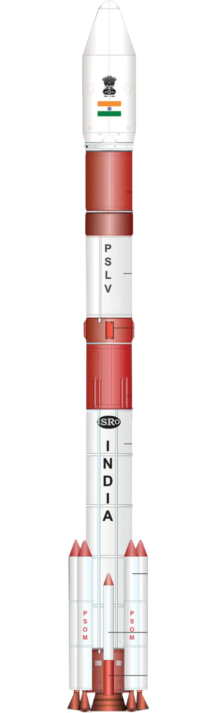
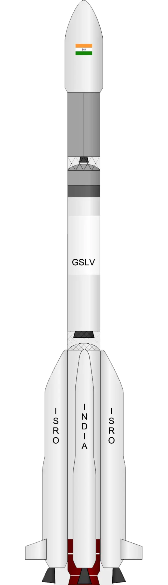
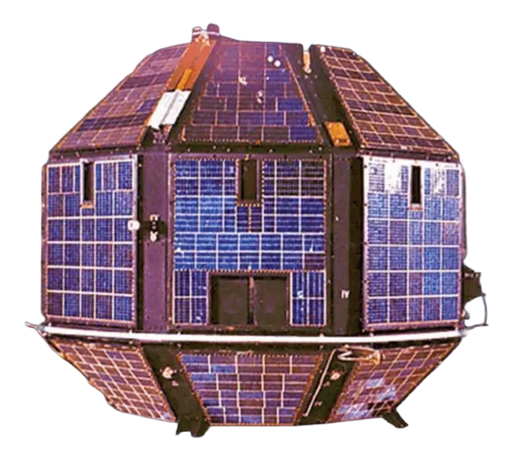
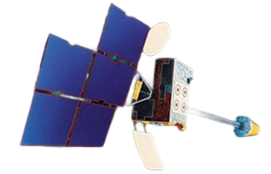
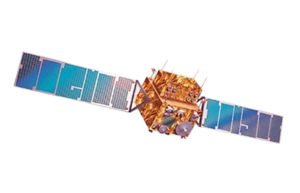
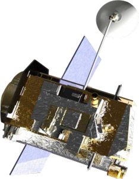
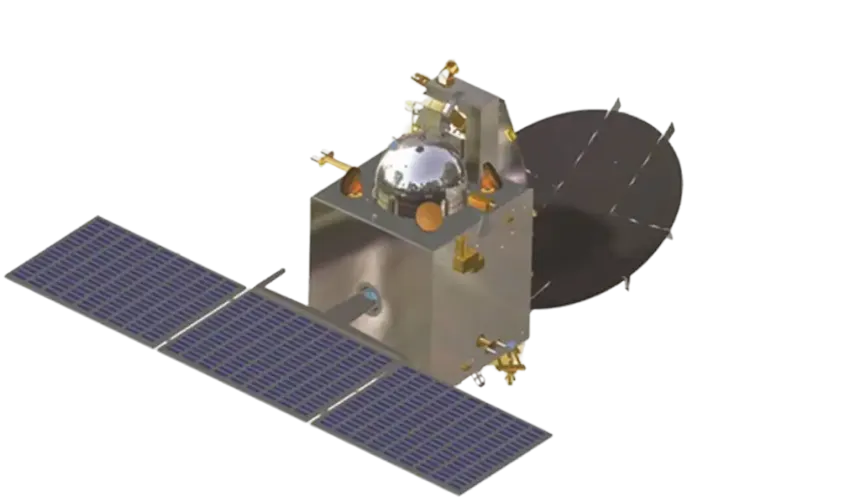
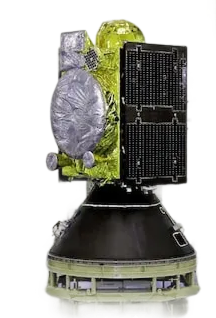
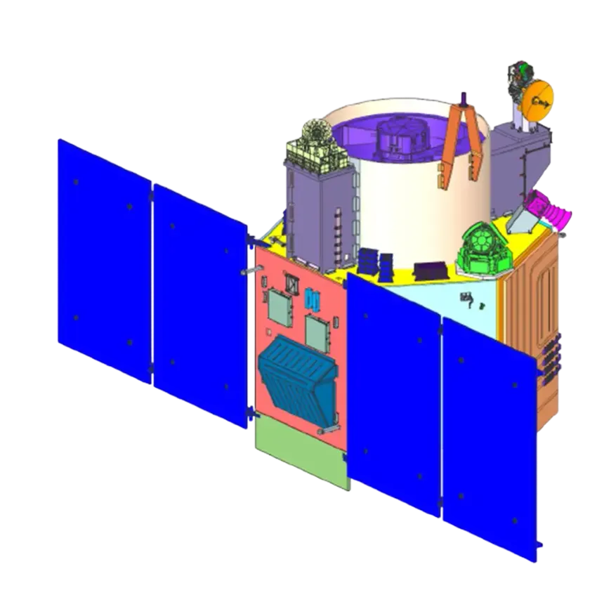
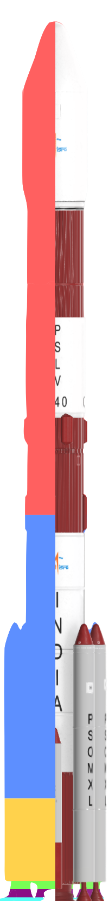

SSO
ACTIVE
NISAR
Altitude
747 km
Launch Vehicle
GSLV-F16
Mass
2,393 kg
Mission Life
3 years
Purpose
Earth Observation
Launch Date
30 Jul 2025
Exploring the cosmos, empowering a billion lives
Three satellite systems support communication, weather intelligence, and navigation services used daily across India.
INSAT, GSAT, and CMS missions support broadcasting, telecom, emergency response links, and digital access in remote regions.
Purpose: Enable TV and radio broadcasting, telecommunication, internet, telemedicine, tele-education, and emergency communication.
India's path to the stars started on the small beaches of Thumba, with sounding rockets carried on bicycles. What began as a modest effort to understand our atmosphere has transformed into a sophisticated orbital program. Today, with over 90+ own successful satellite launches, our space program serves as a backbone for national communication, disaster management, and deep-space exploration.
ISRO operates satellites across three primary orbital regimes, each optimized for different mission requirements. From low-altitude Earth observation to geostationary telecommunications, the orbit determines a satellite's view, speed, and purpose.
Operating just above the atmosphere, Low Earth Orbit is our closest vantage point. Satellites here zip around the globe every 90 minutes, capturing sharp, detailed images of our shifting landscapes. This is where ISRO's Cartosat and RISAT missions live, keeping a constant watch for urban planning and crisis response.
For consistent photography, satellites need a reliable sun. In a Sun-Synchronous Orbit, our spacecraft cross the same spots at the same local time every day, ensuring the lighting remains identical for every snapshot. This stable environment is the preferred home for workhorses like Oceansat, Resourcesat, and the NISAR mission.
High above the equator, satellites in Geostationary Orbit match the Earth's rotation perfectly. By staying fixed over the same patch of land, they provide the steady signals needed for our television, radio, and weather forecasting. Here, the INSAT and GSAT series serve as permanent relay stations for the entire nation.
Our satellite fleet works as a coordinated network. While LEO missions handle high-speed global passes and SSO satellites maintain a systematic scanning grid, our GEO fleet forms a silent, protective arc over our borders. Together, they create a seamless web of data that touches every corner of Indian life.
Launched July 30, 2025 on GSLV-F16, NISAR is the world's most expensive Earth-observation satellite, a joint NASA-ISRO mission carrying dual-frequency L-band and S-band synthetic aperture radar. It maps the entire globe every 12 days to track surface deformation, ice sheet dynamics, and ecosystem changes.
ISRO's launch vehicle family, developed at Satish Dhawan Space Centre in Sriharikota, delivers payloads ranging from nano-satellites to 4-tonne class spacecraft into precise orbits.

PSLV
GSLV LVM3
LVM3
Explore ISRO's complete satellite fleet in an interactive 3D simulation powered by CesiumJS.
Explore the landmark missions that define India's space journey. From early experiments to reaching Mars, each of these steps pushed the very boundaries of human ambition, proving our capability to touch the stars and redefining what is possible.

OrbitLow Earth Orbit (LEO)
VehicleKosmos-3M
AchievementIndia’s first-ever satellite, built to learn how to design, launch, and operate spacecraft.
ImpactProved that India could build and command its own space technology.
OutcomeA proud first step that paved the way for everything to come.

OrbitGeostationary Orbit (GEO)
VehicleSpace Shuttle Challenger
AchievementA game-changer that brought telecom, TV, and weather tracking into a single satellite.
ImpactConnected remote villages to the rest of the nation and established life-saving disaster warnings.
OutcomeBrought the benefits of space technology directly into everyday Indian homes.

OrbitSun-Synchronous Orbit (SSO)
VehicleVostok-2M
AchievementIndia’s first dedicated eye in the sky for high-quality remote sensing and Earth observation.
ImpactGave the nation crucial data to manage farming, water resources, and forests.
OutcomeStarted a continuous legacy of watching over our planet from above.

OrbitLunar Polar Orbit
VehiclePSLV-XL
AchievementIndia's first deep-space mission, orbiting the Moon and dropping a probe to its surface.
ImpactMade history by discovering concrete evidence of water molecules on the Moon.
OutcomeMade the world take notice of India's scientific and exploration spirit.

OrbitMars Elliptical Orbit
VehiclePSLV-XL
AchievementReached the Red Planet on its very first try, completing the mission in record time and budget.
ImpactProved India could handle the extreme challenges of deep-space travel and communication.
OutcomeElevated India into an elite group of nations capable of reaching Mars.

OrbitIGSO + GEO
VehiclePSLV Variants
AchievementCreated a dedicated and highly accurate navigation network specifically for India and its neighbors.
ImpactFreed critical infrastructure and military operations from relying on foreign GPS systems.
OutcomeGave India complete independence in modern tracking and positioning.

OrbitSun-Synchronous Orbit (SSO)
VehiclePSLV-XL
AchievementLaunched one of the sharpest cameras in orbit, capable of incredibly detailed Earth photography.
ImpactRevolutionized border monitoring, city infrastructure planning, and precise mapping.
OutcomeBrought unblinking clarity to national security and civilian planning.
ISRO has launched 434 foreign satellites from 36 countries. This infographic shows the continent-wise share through the color-coded PSLV map.
North America dominates ISRO's foreign launches, with missions largely focused on Earth observation and communications payloads.
Asian payloads include telecom, maritime, and remote-sensing satellites, with Singapore leading this group in launch volume.
Africa's represented missions are led by Algeria's Earth observation satellites used for mapping and resource monitoring.

Click and explore these continents in details.
Launch Share Legend
Europe is the second largest launch partner, with payloads spanning Earth observation, technology demos, and smallsat constellations.
South American missions are compact but diverse, with single satellite launches from four countries.
Oceania appears with Australia, reflecting early smallsat collaboration and university-driven payload participation.
On 15 February 2017, PSLV-C37 launched 104 satellites in one mission, including 101 international payloads.
LVM3 launched 36 OneWeb satellites in October 2022 and 36 more in March 2023, delivering 72 satellites in two flights.
ISRO has served 36 countries through foreign satellite launches, spanning all six inhabited continents in this infographic.
The foreign launch count stands at 434 satellites, with the largest share from North America and Europe.
M.des Intelligent User Experience Design (IUxD)
Presented by
Designed & Developed by
Guided by
Special Thanks
To ISRO for the extraordinary work in India's space program, and to Cesium for the open-source 3D geospatial platform that made this simulation possible. This project is a tribute to the tremendous contributions of ISRO's scientists and engineers.
I started by building a full record of Indian space history. This meant tracking down every mission ISRO has undertaken since the days of Aryabhata in 1975, alongside all foreign satellites launched by ISRO's commercial arm.
The data was split between Indian missions and international commercial launches. This project highlights 118 Indian satellites and 434 foreign craft from 36 different nations, choosing only those with verified orbital paths and reliable mission details.
I chose the PSLV as the central visual symbol of this tracker. With more than 60 successful flights, this "workhorse" isn't just a rocket: its silhouette has become the defining image of India’s reliability and reach in the global space market.
To keep the visualization accurate, I pull real-time TLE data from CelesTrak for active satellites, using the SGP4 algorithm to predict their movement. For the older, silent missions, I rely on stable calculations based on their last known orbital characteristics.